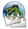

Claws Mail
Dieser Artikel wurde für die folgenden Ubuntu-Versionen getestet:
Ubuntu 14.04 Trusty Tahr
Zum Verständnis dieses Artikels sind folgende Seiten hilfreich:

Claws Mail  ist ein leichtgewichtiger E-Mail-Client (E-Mail-Programm). Lange Zeit war das Programm die Testumgebung für neue Funktionen in Sylpheed, bevor man sich 2005 zu einer Abspaltung entschloss. Seitdem handelt es sich um eine eigenständige Anwendung, die wie der Vorgänger die Grafikbibliothek GTK+ für die grafische Oberfläche verwendet. Im direkten Vergleich bietet Claws Mail inzwischen mehr Funktionen – die meist über Erweiterungen (Plugins) realisiert sind – als Sylpheed.
ist ein leichtgewichtiger E-Mail-Client (E-Mail-Programm). Lange Zeit war das Programm die Testumgebung für neue Funktionen in Sylpheed, bevor man sich 2005 zu einer Abspaltung entschloss. Seitdem handelt es sich um eine eigenständige Anwendung, die wie der Vorgänger die Grafikbibliothek GTK+ für die grafische Oberfläche verwendet. Im direkten Vergleich bietet Claws Mail inzwischen mehr Funktionen – die meist über Erweiterungen (Plugins) realisiert sind – als Sylpheed.
Hinweis:
Claws Mail unterstützt standardmäßig kein HTML (siehe offizielles FAQ ). E-Mails, die HTML enthalten, werden in reine Text-Mails umgewandelt.
Eine HTML-Unterstützung lässt sich per Plugin nachrüsten.
Installation¶
Es müssen folgende Pakete installiert [1] werden:
claws-mail (universe)
claws-mail-i18n (universe)
 mit apturl
mit apturl
Paketliste zum Kopieren:
sudo apt-get install claws-mail claws-mail-i18n
sudo aptitude install claws-mail claws-mail-i18n
Um die in Claws-Mail integrierte Rechtschreibprüfung zu nutzen, sind zusätzlich noch die aspell-Wörterbücher zu installieren. Für eine Rechtschreibprüfung in deutscher Sprache sind dies folgende Wörterbücher:
aspell-de
aspell-de-alt
mit apturl
Paketliste zum Kopieren:
sudo apt-get install aspell-de aspell-de-alt
sudo aptitude install aspell-de aspell-de-alt
PPA¶
Je nach Ubuntu-Versionen findet sich unter Umständen eine aktuellere Version im "Personal Package Archiv" (PPA) [2] der Entwickler.
Adresszeile zum Hinzufügen des PPAs:
ppa:claws-mail/ppa
Hinweis!
Zusätzliche Fremdquellen können das System gefährden.
Ein PPA unterstützt nicht zwangsläufig alle Ubuntu-Versionen. Weitere Informationen sind der  PPA-Beschreibung des Eigentümers/Teams claws-mail zu entnehmen.
PPA-Beschreibung des Eigentümers/Teams claws-mail zu entnehmen.
Damit Pakete aus dem PPA genutzt werden können, müssen die Paketquellen neu eingelesen werden.
Nach dem Aktualisieren der Paketquellen erfolgt die Installation wie oben angegeben.
Plugins¶
Claws Mail lässt sich durch diverse Plugins erweitern. Diese müssen nicht nur installiert, sondern auch aktiviert werden. Für die diversen Claws-Mail-Plugins und deren Aktivierung existiert eine eigene Wiki-Seite: Claws Mail/Plugins. Ohne das eine oder andere Plugin ist die Funktionalität von Claws Mail ziemlich beschränkt.
Konto einrichten¶
Bei der ersten Benutzung von Claws Mail wird man mit einem Assistenten durch die Einrichtung eines Mail-Kontos geführt. Es sind folgende Mailbox-Typen möglich:
POP3
IMAP
UNIX-Mailbox
NNTP - Zugang zu einem Usenet-Server
Keine (Nur SMTP)
Der letzte Punkt ist sinnvoll für ein Konto, von dem man nur versenden möchte. Der häufigste Verwendungszweck dürfte sein, verschiedene E-Mail-Adressen auf ein einziges Postfach weiterleiten zu lassen, aber alle diese Adressen zu verschiedenen Zwecken als Absender zu benutzen.
Neue Konten erstellen und vorhandene Konten ändern kann man später immer über den Menüpunkt "Konfiguration -> Konten bearbeiten". Die Punkte "Neues Konto erstellen..." und "Accounteinstellungen" aus demselben Menü sind einfach Abkürzungen, die einem ein bis zwei Klicks ersparen. Über den Eintrag "Aktuelles Konto wechseln..." kann man festlegen, welches Konto standardmäßig zum Versand benutzt werden soll. Dieses kann man aber natürlich auch bei jeder einzelnen Mail individuell ändern, und bei einer Antwort-Mail benutzt Claws Mail sogar automatisch das passende Konto.
Allgemeine Einstellungen, die z.B. das Aussehen oder die Zusammenarbeit mit externen Programmen beeinflussen, sind unter "Konfiguration -> Einstellungen" zu finden.
Verschlüsselung¶
Wer nicht möchte, dass seine E-Mail und/oder Zugangsdaten von fremden Personen abgefangen, gelesen und evtl. sogar manipuliert werden, muss diese Daten verschlüsselt übertragen. Das kann auf mehreren Ebenen geschehen.
Challenge-Response-Authentifizierung¶
Bei einem Challenge-Response-Verfahren zur Authentifizierung werden die Zugangsdaten nicht im Klartext übertragen. Die E-Mails selber werden allerdings nicht verschlüsselt. Ein derartiges Verfahren kann in den Konten-Einstellungen auf der Seite "Empfange" (POP3/IMAP) oder "Senden" (SMTP) eingestellt werden.
Für das POP3-Protokoll beherrscht Claws Mail nur das APOP-Protokoll, das mit einem Häkchen aktiviert werden kann. Wird dies nicht vom Server unterstützt, sollte man die Client-Server-Verschlüsselung (s.u.) nutzen. Bei IMAP und SMTP steht die "Beglaubigungsmethode" standardmäßig auf "automatisch", was bedeutet, dass ein sicheres Verfahren wie CRAM-MD5 oder DIGEST-MD5 genutzt wird, falls der Server das anbietet. Falls der Server aber nur ein Klartext-Login anbietet, wird dieses ohne Warnung verwendet. Man tut daher gut daran, hier explizit ein sicheres Verfahren einzustellen.
Client-Server-Verschlüsselung¶
Bei dieser Methode wird nicht nur das Passwort, sondern die gesamte Verbindung zwischen Claws Mail und dem Server per SSL/TLS verschlüsselt. Dies schließt natürlich die Zugangsdaten mit ein, so dass man auf die Methoden aus dem vorigen Abschnitt verzichten kann.
Es gibt zwei Methoden der SSL/TLS-Verschlüsselung, die - für Empfang und Versand getrennt - in den Konten-Einstellungen unter "SSL" einstellbar sind. Beide benutzen dieselbe Verschlüsselung und sind also genau gleich sicher. Das etwas ältere Verfahren (SSL) nutzt eine komplett verschlüsselte Verbindung über einen speziellen Port, ähnlich wie es bei sicheren Webseiten praktiziert wird. Das neuere Verfahren benutzt dagegen den Standardport des jeweiligen Protokolls, setzt aber gleich zu Beginn - noch vor der Authentifizierung - einen sogenannten STARTTLS-Befehl ab, der die Verschlüsselung anfordert. Letzteres ist das aktuelle und empfohlene Verfahren und sollte deshalb vorgezogen werden, sofern der Server das zulässt.
Ende-zu-Ende-Verschlüsselung¶
Während die Client-Server-Verschlüsselung bspw. bestens geeignet ist, Passwort und E-Mails vor den Augen neugieriger Arbeitskollegen oder WLAN-Mitnutzern zu schützen, ist ziemlich sicher anzunehmen, dass die Post auf dem Weg zum Empfänger zum Teil unverschlüsselt übertragen wird. Um vertrauliche Mitteilungen zu verwenden, muss man deswegen mit Ende-zu-Ende-Verschlüsselung arbeiten. Ein weit verbreitetes System dazu ist GnuPG, welches im gleichnamigen Wiki-Artikel beschrieben wird. Claws Mail kann GnuPG über entsprechende Plugins nutzen, was unter Claws Mail/Plugins beschrieben wird.
Man sollte aber bedenken, dass auf diese Art nur die Inhalte verschlüsselt werden, nicht etwa die Kopfdaten der E-Mails oder das Passwort. GnuPG-Verschlüsselung ist deswegen keinesfalls als Ersatz, sondern als Ergänzung zu den weiter oben beschriebenen Verfahren zu sehen.
Nachrichten¶
Die Benutzung von Claws Mail unterscheidet sich im Großen und Ganzen nicht sonderlich von anderen grafischen Mail-Programmen. Es gibt eine Werkzeugleiste, um E-Mails vom Konto abzurufen, neue Nachrichten zu schreiben, zu beantworten usw. Der kleine Pfeil neben den Knöpfen ermöglicht dabei eine Auswahl zwischen verwandten Aktionen (bspw. einzelne Konten abrufen), während der große Knopf jeweils die wahrscheinlichste Aktion auslöst.
Im "Ansicht"-Menü befinden sich Optionen, um den Quelltext oder alle Kopfzeilen anzeigen zu lassen. Weitere Möglichkeiten, auch im Nachrichten-Editor, sind selbsterklärend.
Aussehen anpassen¶
Layout¶
Über das "Ansicht"-Menü kann man das Aussehen des Hauptfensters an eigene Vorlieben anpassen. Standardmäßig bietet das Programm die gewohnte Drei-Felder-Ansicht, mit einer hohen Ordnerliste links und zwei übereinander angeordneten Bereichen für eine Liste aller Nachrichten des geöffneten Ordners und die ausgewählte E-Mail. Die Größe der einzelnen Bereiche lässt sich durch einfaches Ziehen der Trennlinien anpassen.
Über den Eintrag "Ansicht -> Anordnung" bzw. "Ansicht -> Bildschirm-Layout" kann man die Aufteilung ändern und bspw. auf Drei-Spalten-Ansicht umschalten. Hinter der Alternative "kleiner Bildschirm" verbirgt sich die Möglichkeit, nur ein einziges Anzeigefeld zu benutzen. Zwischen der Ordneransicht und der Nachrichtenliste kann man dann mit den Pfeiltasten umschalten, während E-Mails immer in einem externen Fenster geöffnet werden.
Im Untermenü "Ansicht -> Anzeigen oder Ausblenden" kann man das Aussehen der Werkzeugleiste bestimmen (Symbole, Text, beides oder gar nichts), die Statuszeile am unteren Rand des Fensters ausblenden, oder von 3-Zonen- auf 2-Zonen-Layout umschalten ("Nachrichtenansicht", funktioniert auch über die Taste V ). So bekommt man mehr Platz für die Nachrichtenliste. E-Mails werden dann durch Doppelklick in einem externen Fenster geöffnet.
Auch die Anzahl und Art der Spalten in Ordner- und Nachrichtenliste kann man hier anpassen, sowie das Sortierkriterium in der Nachrichtenliste. Letzteres geht aber auch einfacher, indem man einfach das entsprechende Feld im Listenkopf ein- oder mehrmals anklickt.
Nach einer Änderung, zum Beispiel wenn man die Breite der Spalten geändert hat, muss man "Ansicht -> Übersicht erneuern" anklicken (Kürzel Strg + Alt + U ), damit diese Einstellung auch dauerhaft gespeichert wird.
Symbol-Design¶
Claws Mail basiert zwar auf dem GTK-Toolkit, bringt aber seine eigenen Symbole (Icons) mit. Daher sind die von Claws Mail verwendeten Symbole unabhängig von den systemweiten Einstellungen.
Designs auswählen¶
Unter
"Konfiguration -> Einstellungen... -> Anzeige -> Themen"
kann man ein Icon-Design auswählen. Es wird eine Vorschau angezeigt. Um das Design dauerhaft zu verwenden, muss noch auf "Dieses benutzen" geklickt werden.
Neue Designs installieren¶
Zuerst muss man aber auch ein paar alternative Designs installieren. Eine Auswahl liefert das folgende Paket:
claws-mail-themes (universe)
mit apturl
Paketliste zum Kopieren:
sudo apt-get install claws-mail-themes
sudo aptitude install claws-mail-themes
Weitere Designs sind auf der Website von Claws Mail - darunter auch ein Icon-Design, das die Tango-Icons verwendet - und bei Pinguinzubehör  zu finden. Die Designs können als Archiv-Datei heruntergeladen werden. Das Archiv, das einen Ordner mit dem Namen des Designs enthält, kann dann an eine beliebige Stelle entpackt [3] werden.
zu finden. Die Designs können als Archiv-Datei heruntergeladen werden. Das Archiv, das einen Ordner mit dem Namen des Designs enthält, kann dann an eine beliebige Stelle entpackt [3] werden.
Unter
"Konfiguration -> Einstellungen... -> Anzeige -> Themen"
kann mit einem Klick auf "neu installieren..." der entpackte Ordner ausgewählt werden. Claws Mail kopiert dann den Ordner ins Designs-Verzeichnis des Benutzers, so dass es von nun an zur Verfügung steht und in der Liste der Designs ausgewählt werden kann.
Falls ein Design systemweit allen Benutzern zur Verfügung stehen soll, muss es manuell mit Root-Rechten [4] nach /usr/share/claws-mail/themes/DESIGN/ kopiert werden.
Signatur¶
Es ist möglich, eine feste Signatur zu erstellen oder einen Befehl als Signatur zu verwenden. Unter "Konfiguration -> Konten bearbeiten-> das gewünschte Konto auswählen -> Bearbeiten -> Verfassen" kann man nun Datei oder Befehlsausgabe wählen. Die Datei ~/.signature kann dazu einfach beliebig verändert werden. Bei der Befehlsausgabe kann man sich z.B. von fortune bei jeder neuen Mail eine neue Signatur generieren lassen. Dazu einfach "fortune -s" in das Feld "Unterschrift" schreiben. Schon hat man bei jeder neuen Mail einen flotten Spruch dabei. Möglich sind auch Befehle wie uname -a u.s.w.
Mailimport aus anderen Programmen¶
Wer bisher ein anderes E-Mail-Programm benutzt hat, möchte sicherlich seine bisherige Korrespondenz in Claws Mail importieren. Am einfachsten gestaltet sich das natürlich, wenn man für seine Postfächer das IMAP-Protokoll einsetzt, da die Mails in diesem Fall auf dem Server verbleiben und man nur ein Konto mit den richtigen Zugangsdaten anlegen muss.
Wer (noch) POP3 verwendet und seine Post auf den eigenen Rechner herunterlädt, der muss die E-Mail-Dateien, die vom bisher genutzten Programm angelegt wurden, importieren. Die meisten gängigen E-Mail-Programme unter Linux nutzen das sogenannte mbox-Format, wofür Claws Mail einen eigenen, über "Datei -> Mbox-Datei importieren" erreichbaren Import-Dialog bietet (siehe Abbildung).
Da in mbox-Dateien jeweils alle Mails eines einzelnen Ordners enthalten sind, muss man jeden Ordner einzeln importieren. Der betreffende Ordner wird beim Import nicht mit erzeugt, man muss also um einen ganzen Ordnerbaum zu klonen, erst einmal eine identische Ordnerstruktur schaffen.
Der Import-Dialog selbst ist recht einfach gehalten. Man muss nur die mbox-Datei auswählen und den Ordner, wo die enthaltenen Mails hinein sollen. Bzgl. der Auswahl der richtigen Datei(en) ist Folgendes zu beachten:
Evolution speichert E-Mails im Verzeichnis ~/.local/share/evolution/mail/ (bis Ubuntu 10.10: ~/.evolution/mail/local/)
Thunderbird in ~/.thunderbird/Profiles/<PROFILNAME>/Mail/Local Folders/, wobei <PROFILNAME> entsprechend ersetzt werden muss.
Um überhaupt auf diese Verzeichnisse zugreifen zu können, muss man im Dateidialog mit der rechten Maustaste in das Dateifeld klicken und "Verborgene Dateien anzeigen" anwählen.
Die richtigen Dateien sind jene, die ohne weitere Dateiendung den Namen des entsprechenden Ordners tragen. Andere Dateien mit Endungen wie .cmeta oder .msf beinhalten nur Meta-Informationen der entsprechenden Programme und sind für den Import irrelevant.
Markierungen¶
Im Kontextmenü der Nachrichtenliste bzw. im "Nachricht"-Menü existieren verschiedene Möglichkeiten Emails zu markieren. Hier kann man Nachrichten als "wichtig" markieren oder Nachrichten als gelesen bzw. ungelesen markieren. (Letzteres auch global für den gesamten Ordner.) Außerdem bietet Claws Mail die Möglichkeit, Nachrichten mit unterschiedlichen Farben zu markieren. Insbesondere in Verbindung mit Filtern kann das nützlich sein. Über "Ansicht -> Gehe zu" kann man so markierte Mails auch direkt anspringen.
Die Möglichkeit, ganze Threads als uninteressant zu markieren, kommt einem besonders bei Mailinglisten zugute. Zukünftige Antworten in diesem Thread werden dann nicht mehr als "neu" markiert und stören nicht den Arbeitsfluss.
Filter¶
Claws Mail bietet ausgefeilte Filterfunktionen. So kann man nicht nur über den Menüpunkt "Konfiguration -> Filterung..." globale Filterregeln festlegen, die für alle neuen Mails gelten, man kann diese auch auf bestimmte Konten beschränken. Außerdem kann man für jeden einzelnen Ordner über dessen Kontextmenü sogenannte "Verarbeitungsregeln" erstellen. Diese funktionieren genauso wie Filter, gelten aber nur für den jeweiligen Ordner, und man kann damit bspw. E-Mails ab einem bestimmten Alter in einen Archiv-Ordner verschieben oder in einem Ordner "Freunde/Familie" die Mails je nach Absender unterschiedlich einfärben lassen. Die Verarbeitungsregeln werden immer dann ausgeführt, wenn man den betreffenden Ordner öffnet.
Experten-Info:
Vor und nach den Verarbeitungsregeln eines Ordners werden dann noch evtl. "Vorverarbeitungs-" und "Nachverarbeitungs"-Regeln ausgeführt, die wiederum global gelten und ebenfalls über das "Konfigurationsmenü" eingestellt werden können.
Das Konfigurationsfenster ist für alle diese Filterarten identisch, abgesehen davon, dass man nur bei globalen Filtern einzelne Konten auswählen kann.
Filterkonfigurationsfenster¶
Die Filterfunktion ist zwar sehr flexibel, aber die Konfiguration ist etwas gewöhnungsbedürftig. Im unteren Teil des Fensters (Bild 1) befindet sich eine Liste aller Filterregeln. Wählt man eine Regel aus, erscheinen die Details im oberen Bereich. Um eine neue Regel zu erstellen, muss man deswegen in der Liste den Eintrag "(Neue)" anwählen. Die Regeln werden in derselben Reihenfolge ausgeführt, in der sie in der Liste auftauchen, weswegen man diese über die Pfeil-Knöpfe ändern kann.
Hat man dort eine passende Regel zurecht gebastelt, muss man diese Änderung unbedingt durch "Hinzufügen" bzw. "Ersetzen" in die Liste aufnehmen. Ansonsten bleibt die Änderung wirkungslos.
Jede Regel hat vier Eigenschaften. Den Namen kann man frei wählen, er dient nur der besseren Übersicht in der Liste. Über "Konto" kann man auswählen, dass die Filterliste nur für bestimmte Konten gelten soll (Oder eben für alle). Die "Bedingung" und "Aktion" ist etwas komplizierter festzulegen, da dies in einer Art Skriptsprache erfolgt. Man kann sie aber auch über den jeweiligen "Definiere"-Dialog zusammenstellen.
Bedingung¶
Auch dieses Fenster hat einen Listenteil unten und einen Auswahlteil oben. Der Grund ist, dass man auf diese Art mehrere Bedingungen verknüpfen kann, und zwar per "oder"- oder "und"-Verknüpfung. Die Art der Bedingung kann man aus einer ellenlangen Liste auswählen, von "Alle Nachrichten" über gängige (oder auch beliebige nicht gängige) Kopfzeilen bis zur Übergabe der gesamten Mail an externe Skripten ist so ziemlich alles möglich. Akzeptiert man die Bedingungen mit "OK", erscheint die entsprechende Skriptzeile im Filter-Fenster.
Aktion¶
Auch in diesem Auswahlfenster erwartet einen die schon vertraute Einteilung, denn es lassen sich auch mehrere Aktionen mit einer Filterregel verknüpfen. Auch die Anzahl der möglichen Aktionen ist so zahlreich, dass sie hier nicht alle aufgezählt werden. U.a. kann man so automatisiert Mails verschieben, löschen, weiterleiten, ins Adressbuch aufnehmen oder diverse Markierungen setzen. Auch hier muss man die Auswahl mit "OK" in das Hauptfenster übernehmen. Außerdem darf man natürlich nicht vergessen, die erstellte Regel dann per "Hinzufügen" in die Filterliste zu übernehmen.
Automatisch erstellen¶
Über das Kontextmenü jeder Mail (Rechtsklick in der Nachrichtenliste) kann man auch etwas einfacher an eine Filter- (oder Verarbeitungs-)regel kommen. Als Kriterium zur Auswahl stehen Betreff, Absender, Empfänger und "automatisch". Letzteres lässt Claws Mail eine möglichst signifikante Kopfzeile auswählen, um Mailinglisten wieder zu erkennen.
Es öffnet sich das oben beschriebene Filterfenster, aber die Bedingungszeile ist bereits ausgefüllt. Selbstverständlich kann man diese noch bearbeiten, wenn man bspw. nicht nach einem Absender, sondern einer ganzen Domain filtern will, oder nicht nach dem kompletten Betreff, sondern nur nach einem Präfix.
Aktionen¶
Claws Mail ist hochgradig konfigurierbar, so dass sich sogar eigene Aktionen definieren lassen, die auf Knopfdruck ausgeführt werden. Als Beispiel sei hier die Einbindung des Spamfilters Bogofilter geschildert.
Hinweis:
Diese Art, Bogofilter zur Spambekämpfung einzusetzen, ist etwas umständlich. Ab Ubuntu 7.04 existiert ein eigenes Bogofilter-Plugin, das dieselbe Funktionalität auf viel einfacherem Wege bereitstellt. Näheres auf der Seite Claws Mail/Plugins.
Als Beispiel für die Einbindung eigener Aktionen in das Programm ist dieser Abschnitt aber auch für die Benutzer aktueller Claws-Mail-Versionen geeignet.
Sicherung der Mailbox¶
Wie man eine Datensicherung der Mailbox vornimmt, hängt vom Postfach bzw. E-Mail Provider ab. Im Folgenden ein Beispiel für ein POP3-Postfach.
Gesichert werden müssen die Ordner:
~/.claws-mail/
~/POSTFACHNAME/
Beim Zurückspielen ist darauf zu achten, beide Ordner zuerst zu entfernen oder umzubenennen, bevor man die Ordner wieder ins Homeverzeichnis kopiert.
Links¶
Dokumentation


 in verschiedenen Sprachen und Formaten
in verschiedenen Sprachen und FormatenClaws Mail/Plugins - Erweiterungen (Auswahl)
Internetanwendungen
 Programmübersicht
Programmübersicht
- Erstellt mit Inyoka
-
 2004 – 2017 ubuntuusers.de • Einige Rechte vorbehalten
2004 – 2017 ubuntuusers.de • Einige Rechte vorbehalten
Lizenz • Kontakt • Datenschutz • Impressum • Serverstatus -
Serverhousing gespendet von